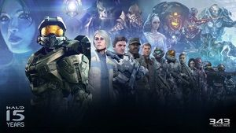

Saga principal
Halo es una franquicia de videojuegos de ciencia ficción creada y desarrollada por Bungie Studios hasta Halo Reach, y gestionada ahora por 343 Industries, propiedad de Xbox Game Studios. La serie se centra en una guerra interestelar entre la humanidad y una alianza teocrática de alienígenas conocidos como Covenant. Más adelante se encontrarán más amenazas como los Floods y los Prometeos. El Covenant es guiado por sus líderes religiosos, los profetas, y adoran a una antigua civilización conocida como los Forerunners, quienes perecieron en combate con el parásito Flood. Muchos de los juegos se centran en las experiencias del jefe maestro John-117 (masterchief), un súper soldado biológicamente mejorado, y su compañera inteligencia artificial (IA), Cortana. El término «Halo» se refiere a las megaestructuras Halo: grandes estructuras habitables en forma de anillos, instaladas en el espacio exterior.

Halo: Combat Evolved
Halo: Combat Evolved, comúnmente conocido como Halo, Halo CE o Halo 1, es un videojuego de disparos en primera persona desarrollado por Bungie Studios y publicado por Microsoft Game Studios el 15 de noviembre de 2001, a manera de título debut de la videoconsola Xbox y de la cual es considerado como su aplicación asesina. Es el primer juego de la franquicia Halo.

Halo 2
Halo 2 es un videojuego de disparos en primera persona (FPS) desarrollado por Bungie Studios junto a Microsoft Studios y es el segundo juego de Halo y sucesor directo del Halo: Combat Evolved. Salió al mercado el 9 de Noviembre de 2004 y es el juego más vendido en la consola Xbox. En el juego volveremos a meternos en la piel del Jefe Maestro, un super soldado Spartan y protagonista principal de la saga de videojuegos de este universo.

Halo 3
Halo 3 es un Shooter en Primera Persona (FPS) de ciencia ficción creado por Bungie y Microsoft Games Studios exclusivamente para Xbox 360. Tiene el lema de "Finish the Fight" (Termina la Batalla). Representa el final de la ya clásica trilogía, y en él se resuelve por fin todo el misterio envolvente a la historia desarrollada en los dos títulos previos, hasta la salida de Halo Wars y Halo: Reach. Halo 3 tiene los modos Campaña, Matchmaking, Multijugador, Forge y Cine. Halo 2 únicamente cuenta con los modos de Campaña y Multijugador para su uso.
Saga del reclamador
La Saga del Reclamador es una de las series más destacadas dentro del universo de Halo, y ha sido aclamada por los fanáticos de la franquicia por su capacidad para expandir y enriquecer la mitología y el trasfondo de este universo de ciencia ficción. La saga se centra en el Jefe Maestro, un Spartan super soldado mejorado genéticamente que ha luchado en innumerables batallas en una galaxia en guerra. La trama principal de la Saga del Reclamador gira en torno a la lucha del Jefe Maestro y sus aliados contra los Prometeos, una raza de inteligencias artificiales avanzadas y mortales que amenazan con destruir toda la vida en la galaxia. A lo largo de la saga, el Jefe Maestro y sus compañeros deben enfrentar peligros y adversidades cada vez mayores, mientras trabajan juntos para descubrir los secretos detrás de los Prometeos y su peligrosa tecnología. Además de la trama principal, la Saga del Reclamador también explora temas más amplios y profundos, como la lealtad, la traición y la naturaleza de la humanidad. A través de personajes como el Jefe Maestro, Cortana, el Forerunner Didact y otros, la saga profundiza en la complejidad de la condición humana y la tensión entre las aspiraciones ideales y las limitaciones de la realidad. La Saga del Reclamador incluye varias novelas, como "Halo: Cryptum", "Halo: Primordium" y "Halo: Silentium", así como varios cómics y otros medios. Estas historias exploran los eventos anteriores a los videojuegos de Halo y proporcionan un contexto crucial para comprender el universo en su totalidad. En general, la Saga del Reclamador es un ejemplo impresionante de la capacidad de la ficción para expandir y enriquecer los mundos de los videojuegos, y ha ganado una gran cantidad de seguidores por su profundidad y su capacidad para explorar temas importantes de una manera entretenida y accesible. 
Halo 4
Halo 4 es un videojuego de acción en primera persona desarrollado por 343 Industries y publicado por Microsoft Studios en 2012 para Xbox 360. Es el primer juego de la saga Halo que no fue desarrollado por Bungie, el estudio original detrás de la franquicia, y representa el inicio de una nueva trilogía en la saga. La historia de Halo 4 comienza cuatro años después de los eventos de Halo 3. El Jefe Maestro, el protagonista de la saga, ha estado en criosueño a bordo de la nave UNSC Forward Unto Dawn, y es despertado por su compañera IA, Cortana, cuando la nave es atacada por una flota enemiga desconocida. La nave se estrella en un misterioso planeta llamado Requiem, donde el Jefe Maestro y Cortana deben luchar contra los peligrosos enemigos que habitan el lugar. A medida que el Jefe Maestro y Cortana exploran el planeta, descubren que Requiem es en realidad una instalación Forerunner, una raza avanzada de seres que crearon los anillos Halo. Allí, descubren que una fuerza enemiga conocida como los Prometeos ha tomado el control de la instalación, y están tratando de activar un arma Forerunner masiva que podría acabar con toda la vida en la galaxia. Para detener a los Prometeos, el Jefe Maestro debe luchar a través de hordas de enemigos, resolver acertijos complejos y descubrir la verdad detrás de la instalación Forerunner. A lo largo del camino, también debe enfrentar su propia humanidad, ya que se enfrenta a su pasado y al trauma de las batallas que ha luchado.
Halo 5: Guardians
Halo 5: Guardians es el segundo juego de la Saga del Reclamador y el undécimo de toda la franquicia. Se convierte en el sucesor cronológico de Halo 4 y sera el predecesor de Halo Infinite. La trama trata sobre la deserción del Jefe Maestro y la caza del mismo por parte de la Oficina de Inteligencia Naval y una amenaza que se encuentra eliminando planetas. Se estrenó el 27 de Octubre de 2015, en exclusiva para la consola Xbox One.
Halo Infinite
Halo Infinite es un videojuego de disparos en primera persona siendo la secuela de Halo 5: Guardians y Halo Wars 2. Así como un reinicio espiritual de la saga. Fue revelado en la E3 de 2018 y originalmente sería lanzado al mercado junto con la Xbox Series X a finales de 2020 estando disponible también para Xbox One y Windows 10. Sin embargo, en Agosto de 2020 343 Industries anunció que el juego sería retrasado, siendo el 8 de Diciembre de 2021 la fecha de lanzamiento.